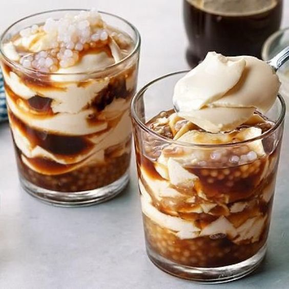

Silken Tofu with Sago Pearls and Syrup

Description
Taho is a type of snack in the Philippines. It has a pudding-like texture. The toppings include a sweet brown
syrup called arnibal, and sago pearls. You will often see hawkers early in the morning selling taho on the
streets. The tofu contains essential amino acids, and a good source of calcium and iron.
Ingredients
- 22 ounces soft silken tofu
- 1 1/4 cup brown sugar
- 1/2 cup sago pearls uncooked
- 4 1/2 cups water
Steps
-
Pour 4 cups of water in a cooking pot and bring to a boil.
-
Put-in the tapioca pearls and cook for 40 minutes in medium heat.
-
Add 1/4 cup brown sugar and mix well.
-
Turn off the heat and let the sago pearls sit on the cooking pot until room temperature is achieved. Set
aside.
-
Heat a saucepan then pour-in 1/2 cup of water.
-
Put-in 1 cup of brown sugar once the water starts to boil. Mix well and simmer until the mixture becomes
thick. Set aside.
-
Transfer the extra soft tofu in a glass or mug then heat in a microwave oven for a minute.
-
Top the extra soft tofu with the cooked tapioca pearls and sweet syrup.
-
Serve warm. Share and Enjoy